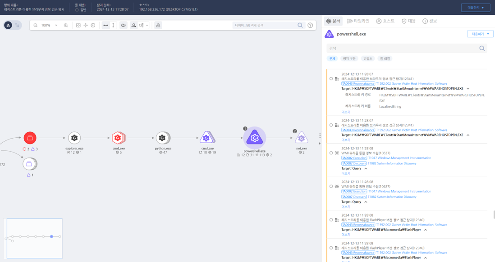

T1592.002.01 피해자 호스트 정보 수집 - 소프트웨어
D3FEND
MITRE ATT&CK 액션을 기준으로 대응 방안을 작성
Detection
process_name:powershell.exe AND
Action : Registry-QueryValue (KEY : HKLM\SOFTWARE\Macromedia\FlashPlayer , VALUE : FlashPlayerValue) OR
Action : Registry-QueryValue (KEY : HKLM\SOFTWARE\Client\StartMenuInternet , VALUE : * )
Detection(EDR)

Response
- 이벤트 분석
- 호스트에서 실행된 명령어 로그 및 사용자 활동 기록을 검토하여 정보 수집 흔적을 확인.
- 비정상적인 네트워크 트래픽 및 원격 접속 시도를 분석.
- 격리 및 조사
- 의심스러운 프로세스를 즉시 종료하고 호스트를 격리.
- 실행된 악성코드의 동작을 리버스 엔지니어링하거나 샌드박스 환경에서 분석.
- 정보 차단
- 소프트웨어 정보 유출을 차단하기 위해 네트워크 방화벽 및 DLP(Data Loss Prevention) 솔루션 적용.
- 손상된 계정 자격 증명을 즉시 폐기 및 재설정.
Mitigations
- 시스템 하드닝
- PowerShell 및 WMI 명령 실행을 최소화하거나 관리 계정으로 제한.
- 시스템에 설치된 모든 소프트웨어를 최신 상태로 유지.
- 접근 통제
- 원격 관리 도구의 접근 권한을 엄격히 제어.
- 사용자 계정을 최소 권한 원칙(Least Privilege)으로 구성.
- 모니터링 및 탐지
- 설치된 소프트웨어 정보를 조회하는 비정상적인 활동을 탐지하기 위한 SIEM(Security Information and Event Management) 규칙 설정.
- EDR(Endpoint Detection and Response) 솔루션을 활용해 프로세스와 명령 실행을 모니터링.
Affected Techniques
Action 실행시 함께 영향을 받는 다른 Techniqes
| D3FEND |
| D3-FIM File Integrity Monitoring |
| D3-ITF Inbound Traffic Filtering |
| D3-OTF Outbound Traffic Filtering |
| D3-OSM Operating System Monitoring |
| D3-UBA User Behavior Analysis |